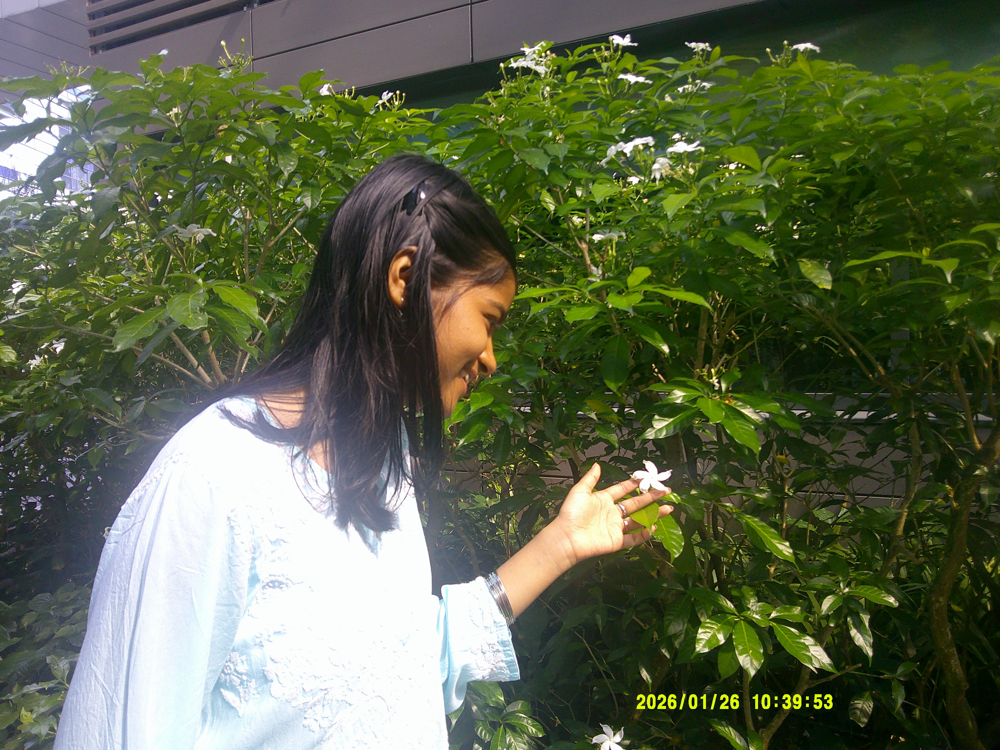

✦ behind the fog ✦
a note from the founder
My name is Nistha, and I have always had the urge to try everything, to never let curiosity go unanswered or an idea go untried.
Fog & Thread started the way most honest things do: unexpectedly. I was writing a creative application, reread my own words, and thought, why not just make the thing? So I did.
The name means something to me. Fog is the uncertainty we all carry, the questions without answers, the feelings without names. Thread is what gets us through. For me, that thread is writing, making, noticing.
This magazine is mine. But the feeling it holds belongs to all of us.
Welcome. I hope you find something warm here. Something that feels like it was waiting for you.

Nistha,
still finding her thread
✦ founded with curiosity, kept alive by thread ✦
🌿